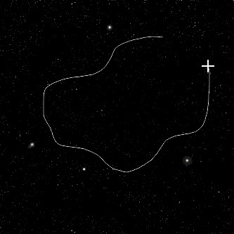

|
PART II:
The Space Scene |
|
Step 11: Nebula |
|
In this step we will give our space scene a little color. No, seriously,
just a little color. Keep in mind as you work through this step that your
nebula should not be overly bold or bright as this will tend to make it stand
out and take away from the other items in your scene. We want to give our
scene a nice color that sits in the background with our star field and adds
some interesting variety and not some bold color that is the image's focal
point.
-
Open your Space10
file in Photopea
-
Press D on the keyboard
(remember what this does?)
- Insert a new layer and name it Nebula1
- make sure this new layer is NOT in the Star Field folder group but
is above it in the layer stack...
- Fill the Nebula layer with black...

and make sure the Nebula layer is selected
- Change the blending mode of the Nebula layer to Linear
Dodge...
Notice that you can now see your stars through the Nebula layer
- Select the Lasso Tool...
The Lasso Tool allows us to make selections of any shape we like
- On the Lasso Tool Option Bar set the Feather to 75px...
This will give our nebula a nice, soft edge
- Click and drag to create a region to place
your first nebula - it can be anywhere you want and any shape you want, but remember that if you
place
it where you placed your bright stars they will become difficult to see...

Notice that when you release the mouse after drawing your selection area that
the selection will change, sometimes dramatically, to be more rounded than
your original area...
This happens because the feather is set so high that the selection will have
very spread out edges. This is what we want at this point.
-
Click the Swap Colors icon to set white as your Foreground color and black as your
background color...

-
Change the Foreground color to the color you want your nebula to
be - it should be a dark shade and NOT bright or your nebula clouds will look
unnatural...
Notice how the bright pink on the left looks unnatural and could even be some
space blob that is about to eat our solar system, where the darker color on the
right gives us the slight color we want - we don't want too much color at this
point as we will be adding in more clouds (including different colored clouds)
in the coming directions
-
Click Filter then point at Render and click
Clouds...
-
You should now have something similar to the image below
(no, yours will not look just like mine)...
-
If you think the nebula is too bright or you don't like the
shape you can undo and try again, or you can simply use the Eraser Tool to remove
some of the clouds until you get something you do like (be advised: of you use
an eraser DO NOT use one with a hard edge - it will not look natural)
-
Repeat the above procedure several more times until you
have a nicely built nebula; keep the following in mind as you build your
nebula:
-
Place each new shape and color on its own
layer
-
Name each new layer you create in numeric sequence: Nebula1, Nebula2, Nebula3,
etc.
-
Create a nebula with AT LEAST 2 different colors - you can certainly have more,
but don't go crazy (there are very few real nebula with more than a handful of
different colors)
-
Feel free to use a variety of colors as you create your nebula, but make your color shifts small (for example from blue to
turquoise or from purple to
lavender) or the nebula will look unnatural
-
Do not use black or white
-
Do not try to fill the entire image with color
-
Be sure to set the blending mode of each nebula layer to Linear Dodge
-
Try not to make sections of the
nebula too dark - you should always be able to see the stars through your clouds
-
Try to make some areas of color larger and some areas smaller - this will add to
the realism
-
When trying to make small areas of color, you may find that the selection area
you are drawing disappears when you release the mouse button. If this happens,
don't panic. This is because the shape you are drawing is
smaller than the 75 pixel feather we defined earlier. One solution to
this is to decrease the feather - but be careful not to decrease it below 50 or
your areas of color will be too solid.
- Select all of the nebula layers...
(You may have more or less nebula layers -
this is OK) and click on the New Folder icon
- Rename the folder group you just made Nebula...
- Take a look at your nebula and make sure it is not too bright - look at
this...
Notice that the nebula is so bright that you can not see the stars through
it - your nebula should be a splash of color that sits in the background of
your image to add interest and variety to your space scene and not a bold
area of color that screams 'look at me!' - if your nebula is too bright, you
can quickly and easily soften it up by decreasing the opacity (the depth of color) of the
Nebula folder group to get it down to something more realistic. Simply make sure your Nebula
folder group is selected in your Layers panel (it
should be highlighted in gray as in the image below) then click the
Opacity
drop down arrow (1 in the image below) and grab
the Opacity slider (2 in the image below) and drag it to the left (3
in the image below)...
Until your nebula is a nice soft color and you can see your
stars through it...
Keep in mind that the images in this step are screenshots and thus are not
as detailed and pretty as your nebula should be
When you have completed your nebula, you should have something similar
to the image below...
- Lock the Nebula folder group...
Keep in mind that we will be adding planets (and a bunch of other stuff), so
parts of our nebula
will
be covered up. If there is an area (or areas) that you do not like, don't worry about it
right now. You can stick a planet over the problem area so that it won't show in the final image.
- Click File then click Save as PSD
- Name the file Space11
Time to add in a sun.
01 |
02 |
03 |
04 |
05 |
06 |
07 |
08 |
09 |
10 | 11 |
12 |
13 |
14 |
15 |
16 |
17 |
18 |
19 |
20
{kind=link}
{kind=link}